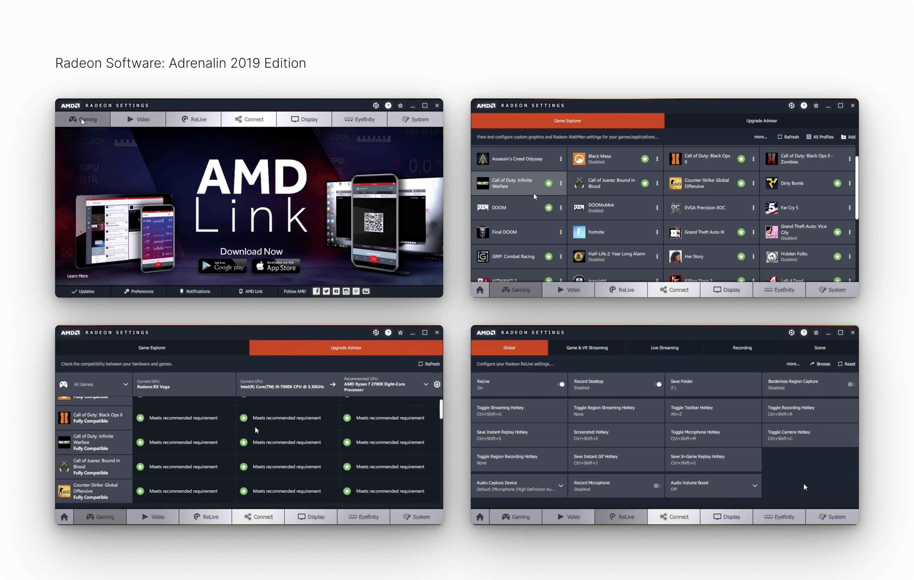
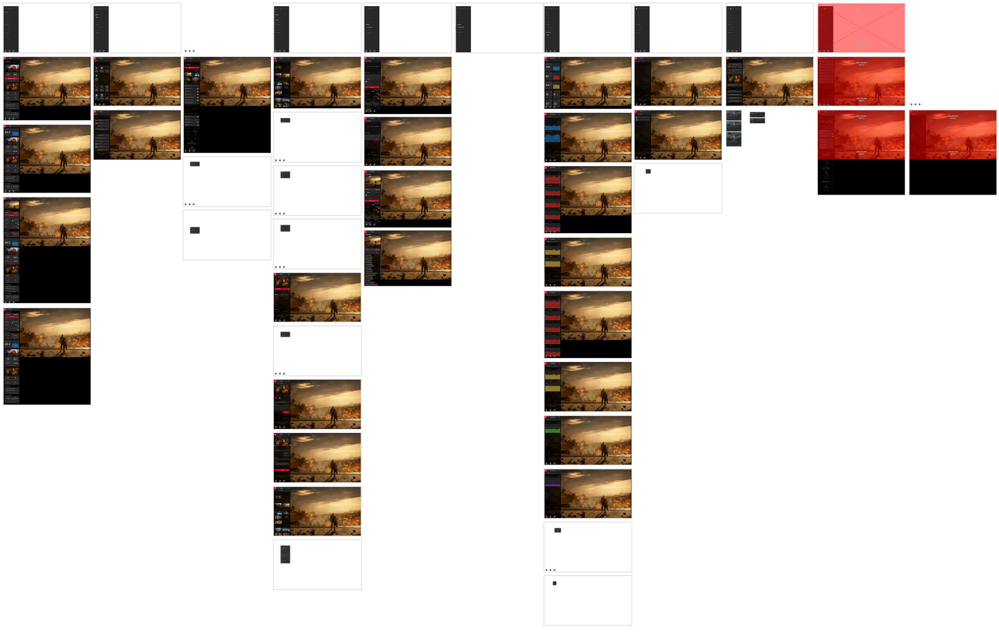

Validating the revamped Radeon Software: Adrenalin Edition
experience
Role • UX Design Intern at AMD
Team • 1 PM, 1 Design Lead, 1
Designer (me)
Time • 6 weeks, Fall 2019
Tools • Adobe XD, Useberry
Context
AMD is a leading semiconductor company
specializing in the design and production of computer processors,
graphics cards, and related technologies. Radeon Software: Adrenalin
Edition (yes, they spelled 'adrenaline' wrong intentionally), now known
as AMD Software, serves as the all-in-one driver and utility suite for
their Radeon graphics cards and APUs. It offers a wide range of
features, including game profile management, overclocking and
undervolting options, performance monitoring, as well as recording and
streaming capabilities.
During my internship, I worked on the revamped Radeon Software:
Adrenalin 2020 Edition, which I'll refer to as RSX for short. I focused
on validating the updated design by creating and usability testing a
high fidelity prototype, generating insights for future design
improvments. Other responsibilities during my internship included
starting RSX's first design system and designing relevant components,
overlays, and screens when necessary.
Current State
Prior to the release of RSX, Radeon Software: Adrenalin Edition was in
its 2019 version, which maintained the same user interface since the end
of 2015 when it was originally launched as Radeon Software: Crimson
Edition. While there were slight tweaks made over the years, the core
tab-based design remained largely unchanged—this continuity facilitated
easy navigation between various settings and features, as users became
very familiar and comfortable with its layout.

Future State
The upcoming RSX update would deliver a comprehensive suite of drivers,
settings, and enhanced features—this included innovative features such
as Radeon Boost, which dynamically adjusts rendering resolution for
smoother gameplay; Radeon Anti-Lag, designed to minimize input latency;
Radeon Image Sharpening for improved visual clarity; Radeon Integer
Scaling for better retro game displays; AMD Link Streaming for game
streaming from anywhere; and Integrated Web Browsing, which allowed
users to conveniently browse the web without leaving the full-screen
game interface—ideal for quick searches, tutorials, or checking gaming
forums during gameplay. All of these features were aimed at enhancing
the gaming experience and optimizing performance.
The biggest change from this update was a completely revamped user
interface, designed to provide a more modern and user-friendly
experience. This new interface aimed to enable users to swiftly access
the latest software features, game statistics, performance reports, and
driver updates from a single location. This streamlined approach sought
to create a more immersive gaming experience, ensuring that users could
efficiently navigate through settings and utilize the full potential of
their hardware​.
When I joined the team, my primary responsibility was to validate the
new user interface and experience of RSX. Although the revamped design
was nearing completion, it had undergone minimal testing with actual
users. My task was to create a high-fidelity prototype by mapping out
user flows of the new designs and conduct usability testing. While the
new interface appeared more modern and sleek, the key question remained:
was it truly intuitive? Would users find it easy to understand and
navigate the new UI, or would they hesitate to invest the time needed to
learn and adapt to it?
User Flows
Given that RSX introduced several new features, it was essential to
outline user flows for both new and existing functionalities.
Additionally, I needed to accommodate users with varying levels of
experience with gaming and Radeon Software: Adrenalin Edition. How would
the experience differ for novice versus experienced users? Keeping these
considerations in mind, I mapped out the user flows and developed a
high-fidelity prototype that incorporated animations, transitions,
overlays, and keyboard shortcuts. The prototype was comprehensive,
featuring multiple pathways to access various functionalities from
different locations within the interface. This complexity ensured that
the experience would come as close as possible to the fully developed
version set for release.
User Flows (Task Flows)
Open Radeon Software
Launch a game (Gears 5)
Open Radeon overlay and sidebar
Check software and hardware settings
Enable/disable Radeon FreeSync
Enable and/or modify Radeon Boost
Enable Radeon performance metrics overlay
Open performance tools and overclock GPU
Open performance tuning, modify fan speed
Open web browser
Check for an update
Change default settings profile
Open and change video settings
Create a new scene for streaming
Start a streaming session
Enable and capture an instant replay
Enable and record a video of desktop
Edit and trim a video
Upload and share a video

Usability Testing
After creating the prototype, it was time to test the new RSX design. To
effectively synthesize the usability testing data, understanding the
types of users being interviewed was essential. Different user
backgrounds and experiences could significantly influence their
interaction with the software and their feedback on its usability. To
gain this context, I started by asking users a series of screening
questions:
Screening Questions
How experienced are you with Radeon Software: Adrenalin Edition?
Are you a Gamer, Esports Enthusiast, and/or Content Creator? (can
check all or none)
How many hours do you spend gaming in a week? (Never, 1-10, 11-20,
21+)
These questions aimed to categorize users based on their familiarity
with Radeon Software: Adrenalin Edition and their engagement with
gaming. For instance, knowing whether a user was an Esports enthusiast
or a casual gamer could provide insights into their expectations and the
importance of specific features. Additionally, the question about weekly
gaming hours helped gauge the user’s overall engagement with gaming,
which could correlate with their need for advanced features and
performance metrics. By understanding the user demographics, I could
better analyze the usability data and identify trends or common pain
points across different user groups.
The feedback from usability testing was largely positive. Many users
praised the new interface for its visually appealing design and the
addition of highly anticipated features like Radeon Boost, Anti-Lag,
Image Sharpening, and Integer Display Scaling. These enhancements were
seen as major upgrades, especially for gamers looking to boost
performance and visual quality. Customization options also received high
praise, espically the new Performance tab, which gave users more control
over GPU settings, such as clock speeds, fan profiles, and power
consumption, allowing users to overclock or undervolt their graphics
cards without needing third-party tools​.
However, there were some reservations among users who preferred the
simplicity of the previous design. Some expressed concerns about
potential system slowdowns due to the additional RAM usage of new
features, perceiving them as potential bloatware. Despite the visual
appeal of the new UI, some users felt that it took up too much space and
was overly complicated and layered, with excessive scrolling and too
many nested menus, making navigation feel confusing.
The discoverability of certain features also proved challenging. Many
users had difficulty finding functionalities that had been replaced or
merged into newer features, like the confusion around Frame Rate Target
Control being replaced by Radeon Chill. Additionally, only the
fullscreen hotkey was explained at launch, leading to misunderstandings
about the availability of the sidebar view, which caused some
frustration.
Lastly, while core features were well received, a majority of users
questioned the necessity of some additions, such as the integrated web
browser and recording and streaming tools. These were seen as less
relevant to users who did not engage in content creation, with many
wondering if these features were needed at all. Overall, though there
were some mixed opinions, the majority of feedback was positive,
especially with regard to performance-focused improvements and visual
enhancements.
Insights & Takeaways
RSX was praised for its sleek UI and features like Radeon Boost and
Anti-Lag, but was also seen as overly complicated with excessive
scrolling and nested menus
Users valued the new Performance and GPU control, but struggled with
relocated features. Limited launch guidance on the sidebar view added
to the confusion
Users worried about the integrated browser and streaming tools, citing
potential RAM usage and bloatware issues
Results
Due to product deadlines, RSX was released just before Christmas on
December 10, 2019, which limited the implementation of major changes.
Despite this, Radeon Software: Adrenalin Edition continuously receives
updates, and subsequent versions have been refined based on user
feedback from usability testing and real-world use. Now branded as AMD
Software, the application is currently in its 2024 release and is
utilized by millions of gamers worldwide. For a closer look at the
initial release of RSX, here's an introductory video below.
Next Steps
RSX was released just before my internship ended—if I had more time, I
would closely monitor various metrics and KPIs derived from the live
environment. This analysis would enable me to assess the effectiveness
of the new design and identify areas for further improvement.
Key Metrics & Performance Indicators
Installation Success Rate —
Tracking this metric would indicate how smoothly users onboarded RSX,
with a high success rate suggesting that users are willing to adopt
the new design
Feature Utilization —
Understanding which features are most frequently used would guide
future design efforts and improvements for the most valued
functionalities
Task Flow Metrics — Analyzing
click-through rates and time spent on various tasks would help
identify areas for interface optimization
Overall, leveraging these metrics would provide a comprehensive
understanding of user interactions with RSX, allowing for data-driven
decisions that enhance the overall user experience. By prioritizing user
feedback and analyzing performance metrics, we could ensure that future
updates continue to align with the evolving needs and preferences of
RSX's gaming community.
Lessons Learned
In my previous roles, I worked on projects with much smaller scopes, so
transitioning to a large company like AMD offered valuable lessons. One
key takeaway was the importance of clear and constant communication
within my team, as the complexity of RSX required regular collaboration
with my product manager, design lead, and other stakeholders. I also
learned that hitting deadlines sometimes means launching a product
without all the features or improvements we originally planned, which
really drove home how software development is always an iterative and
ongoing process. This experience also reinforced how essential user
feedback and adaptability are in ensuring the product keeps evolving to
meet users’ needs and stays aligned with their expectations. Overall, I
learned how crucial it is to balance innovation with practical, timely
delivery.